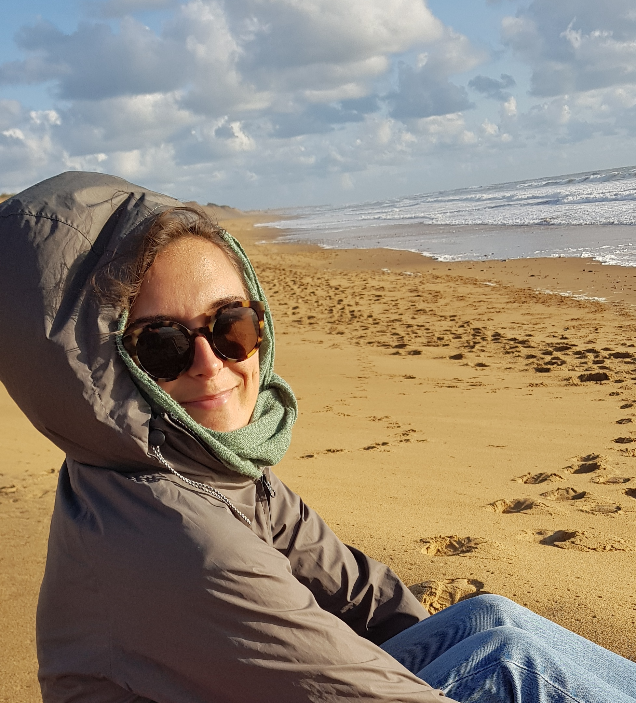
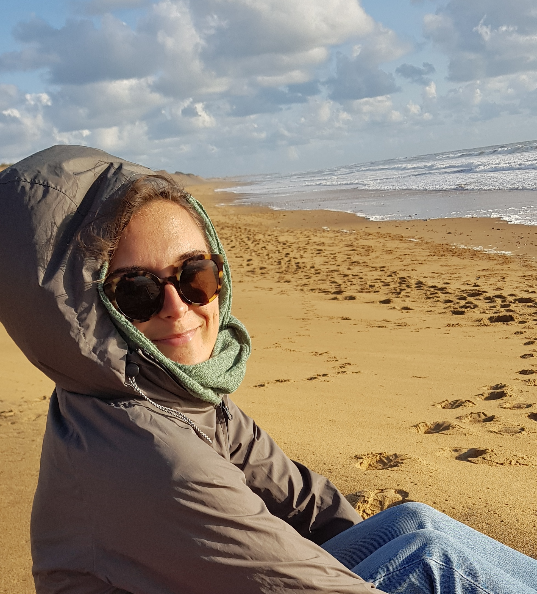

Growing up in a small coastal town in France, my early years were marked by profound emotional challenges. At just four years old, I lost my mother, an event that left a lasting void in my life. My father, a fisherman, was often away from home, and the person responsible for caring for me during his absence was emotionally abusive. Motivated by jealousy and a cruel lack of love, this individual behaved kindly in front of others—even my father—but revealed their true, hurtful nature when we were alone. From ages 6 to 10, I endured intense emotional and psychological abuse and manipulation. Eventually, the discontent became too much, and I managed to run away at noon, after school. This period of my life is difficult to explain in its complexity.
After escaping this situation, I lived with my ailing father, who struggled with his own unresolved traumas, leaving him unable to provide the emotional and educational support I needed. He passed away when I was 14, due to his unhealthy lifestyle. Thankfully, my loving aunt and grandmother stepped in, offering me a semblance of stability despite my withdrawn behavior. Needless to say, these experiences shaped my entire perception of the world through the lens of low self-esteem, emotional outbursts, and a deep need for approval.
Though painful, these challenges built my resilience and fueled my passion for Life Sciences, particularly for health. At 18, I moved to Paris to study biology, focusing on physiopathology. Over the years, I earned two master's degrees—one in nutrition and metabolism, and another in biotechnology—and worked in a neuro-respiratory lab. Yet, despite these accomplishments, I struggled to truly appreciate my success, attributing it to luck rather than recognizing my own efforts.
In my early twenties, I found myself living a carefree and escapist lifestyle. I focused on socializing, partying, drinking, and smoking. While these years brought many fun memories, I couldn’t shake the feeling that something was out of sync. It felt like I was living a double life, with my outward, shallow actions clashing against my deeper, more introspective sense of self.
During these years, I denied my sensitivity, viewing it as a weakness that needed to be hidden. I believed that my strong emotions, gut feelings, and intense experiences made me "not normal," and for a long time, I thought there was something wrong with me. The inner conflict became unbearable. I collapsed internally and hit my lowest point in 2022 at 27. I felt utterly lost and overwhelmed by the uncertainty of my future. I had never truly reflected on what I wanted from life, was completely influenced by other people's choices, driven by my emotions, and pressured by societal expectations.
Moreover, my initial passion for health began to erode as I became disillusioned with conventional healthcare. I found the traditional approach too reductive, overly focused on diagnosis and medication, while neglecting the broader environmental, emotional, and psychological factors that shape our well-being.
The need to realign my life with my core values became urgent—almost vital. I realized I had to take control and accountability for my own life. Through these challenges, a powerful curiosity began to emerge, pushing me to seek deeper answers. This feeling of disconnection led me to start investigating well-being on my own, beyond just physical health. It was the beginning of my personal journey.
I started meditating and journaling daily, exploring the roles of emotions and mindset, and challenging my own limiting beliefs in pursuit of healing and growth. I’ve committed myself to extensive research and personal experimentation. I’ve been exploring these concepts in my own life, testing what works and what doesn’t, driven by a desire to uncover holistic solutions that are rooted in both personal experience and scientific understanding. Through this journey, I’ve learned that embodying my true nature and individuality has given my life meaning and fulfillment, and it’s this knowledge that I want to share with you.
Two years later, the results have been transformative. I feel better and more stable than I ever have before. I have finally found peace of mind and a sense of fulfillment. For the first time, I’ve experienced genuine personal growth, taken pride in my achievements, and developed self-confidence. I’m proud to say that I’ve learned to love who I am, and I’m grateful for the person I’ve become.
Of course, this is an ongoing journey but what I’ve learned ever since is that empowering my true nature and gaining understanding of the external world has given my life an entirely different perspective, more choices and a vision for the future.
Now, I want to share what I’ve learned. I’m very empathetic and I desire to help others grow. Above all, I believe in the importance of human connection, and I’d like seeing us thriving in this fast-changing world. I believe it’s time, if not urgent, to bridge old ways of thinking with new. We need to refresh our approaches to well-being.


 
